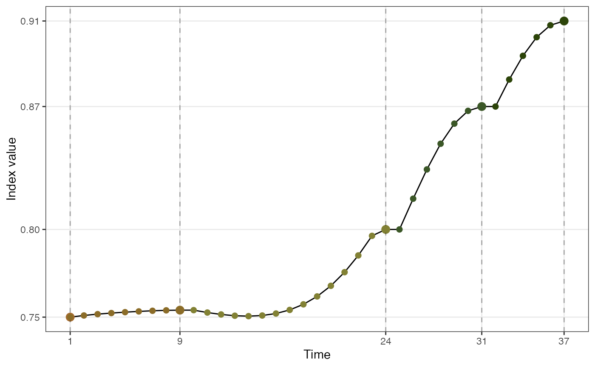
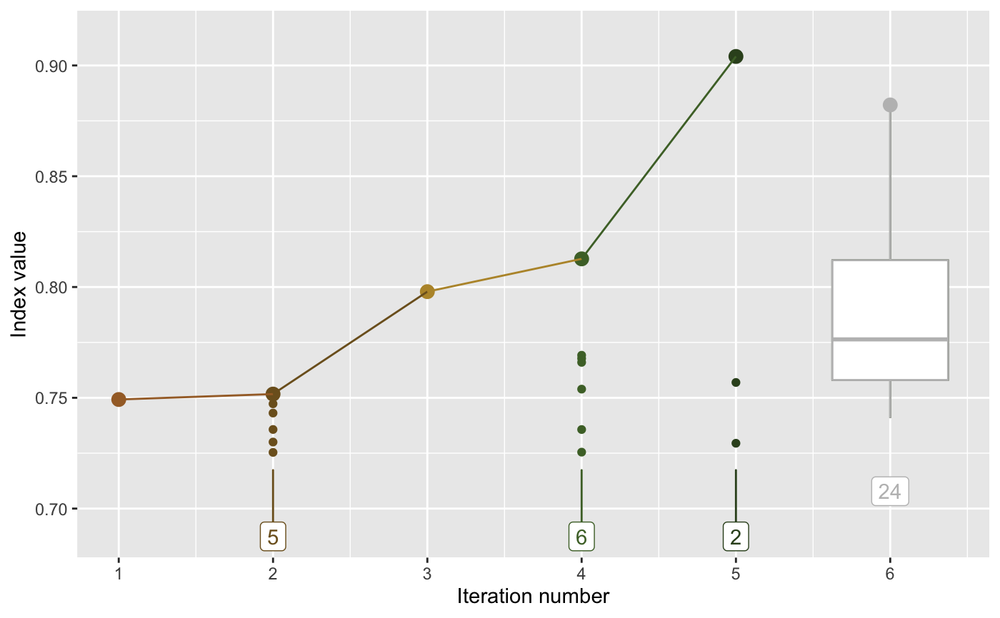
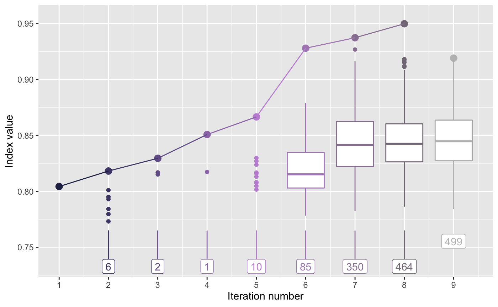

The boa data is simulated using different Gaussian mixtures with varied centers and weights,
whilst those prefixed holes_* are data objects summarising the optimisation paths
generated by the tourr package (see format for the code of simulation). The boa data can be used to
explore performance of different optimisation routines in the tourr, and the holes_* is used to
test out the diagnostic plots provided in this package.
holes_1d_geo holes_1d_better holes_2d_better holes_2d_better_max_tries boa boa5 boa6
The code for simulating each data object is as follows:
set.seed(123456);
holes_1d_geo <-
animate_dist(boa5, tour_path = guided_tour(holes(), d = 1,
search_f = search_geodesic),
rescale = FALSE)
set.seed(123456)
holes_1d_better <-
animate_dist(boa5, tour_path = guided_tour(holes(), d = 1,
search_f = search_better),
rescale = FALSE)
set.seed(123456)
holes_2d_better <-
animate_xy(boa6, tour_path = guided_tour(holes(), d = 2,
search_f = search_better),
rescale = FALSE)
set.seed(123456)
holes_2d_better_max_tries <-
animate_xy(boa6, tour_path = guided_tour(holes(), d = 2,
search_f = search_better,
max.tries = 500),
rescale = FALSE)
library(tidyverse)
set.seed(1234)
x1 <- rnorm(1000, 0, 1)
x2 <- sample(c(rnorm(500, -3, 1), rnorm(500, 3, 1)), size = 1000)
x3 <- sample(c(rep(-1, 500), rep(1, 500)), size = 1000)
x4 <- sample(c(rnorm(250, -3, 1), rnorm(750, 3, 1)), size = 1000)
x5 <- sample(c(rnorm(330, -5, 1), rnorm(340, 0, 1), rnorm(330, 5, 1)), size = 1000)
x6 <- sample(c(rnorm(450, -5, 1), rnorm(100, 0, 1), rnorm(450, 5, 1)), size = 1000)
x7 <- sample(c(rnorm(500, -5, 1), rnorm(500, 5, 1)), size = 1000)
x8 <- rnorm(1000, 0, 1)
x9 <- rnorm(1000, 0, 1)
x10 <- rnorm(1000, 0, 1)
boa <- tibble(x1 = x1, x2 = x2, x3 = x3, x4 = x4, x5 = x5,
x6 = x6, x7 = x7, x8 = x8, x9 = x9, x10 = x10)
boa <- as_tibble(scale(boa))
boa5 <- select(boa, x1, x2, x8: x10)
boa6 <- select(boa, x1, x2, x7: x10)
Boa is given as the name of the dataset because the density plot of each variable in the data looks like boa constrictors swallowing multiple french sticks, rather than elephants, as per the little prince.
holes indicates the usage of holes index, 1d or 2d represent if the five variable boa5 or the six variable boa6 is used
The third chunk of the name indicates the seraching method used i.e. geo for geodesic search and better for search_better
Simulated data using different optimisation algorithms in guided tour.
#> #>#> #> #>#> #> #>boa %>% pivot_longer(cols = x1:x10, names_to = "var", values_to = "value") %>% mutate(var = forcats::fct_relevel(as.factor(var), paste0("x", 1:10))) %>% ggplot(aes(x = value)) + geom_density() + facet_wrap(vars(var))#>#>holes_2d_better_max_tries %>% explore_trace_search() + scale_color_continuous_botanical(palette = "daisy")#>#>#> Warning: Continuous x aesthetic -- did you forget aes(group=...)?